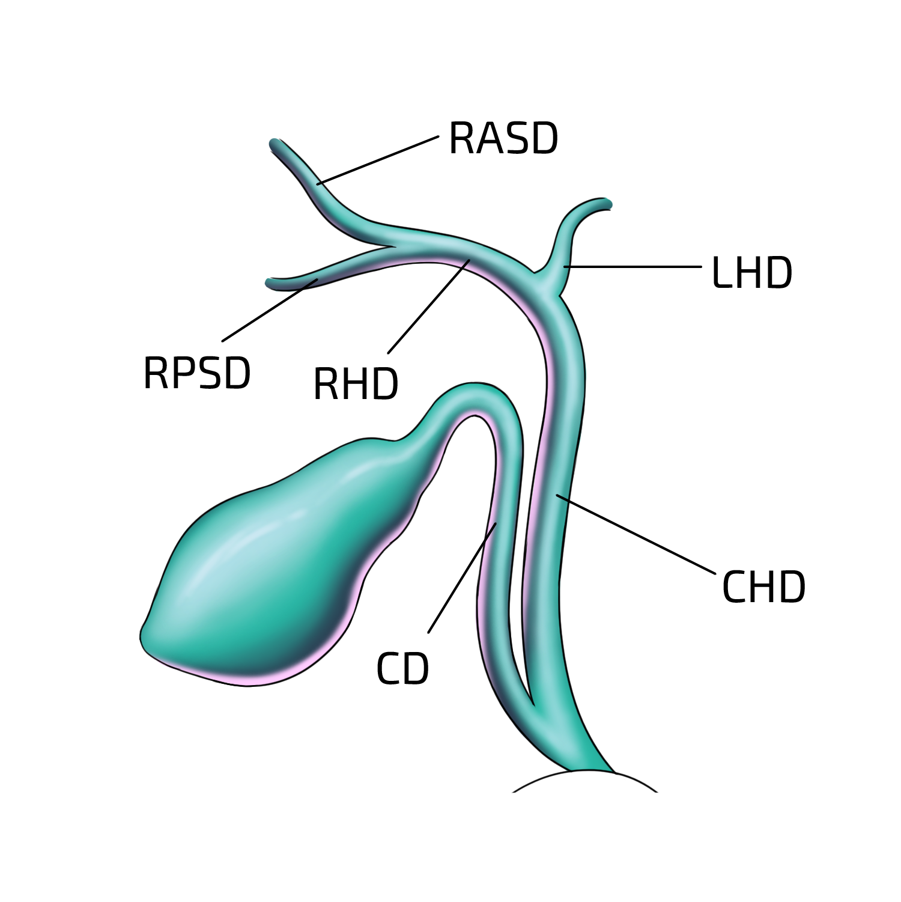

Cholecystectomy
- Identify the liver and gallbladder
- Expose gallbladder by retraction
- Identify the B-safe landmarks and note any anatomical variation. Orientate self at each “time-out” in surgery. Abort procedure if gallbladder cannot be visualised.
- B = bile duct, Base segment 4
- S = Sulcus Rouviere's, segment 4
- A = Artery Hepatic
- F = FIssure umblical
- E = Enteric structure
- View hepato-cystic triangle (lower border of liver, cystic duct, common hepatic duct)

- clear any fatty tissue away from triangle
- achieve Critical View of Safety (CVS)
- identify cystic duct + cystic artery within clear hepato-cystic triangle
- partial separation of gallbladder from liver = expose only lower 1/3 of cystic plate (where gallbladder attaches to liver)
- if too much cystic plate exposed = risk of gallbladder twisting
- 2 (and ONLY 2) structures should be seen entering gallbladder
- apply clip to cystic artery + cystic duct, at neck of gallbladder
- clips = 2 proximal clips + 1 distal clip
- divide cystic artery + cystic duct (cut between 2nd proximal clip + distal clip)
- separate gallbladder from liver bed (aspirate any blood/bile that accumulated)
- extract gallbladder
- closure